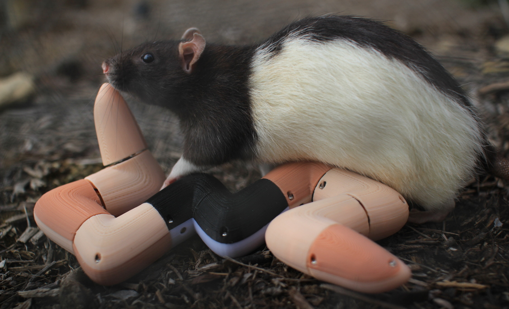

Longing Evans
(2019)

Could Long Evans rats have a subconscious yearning for the ancestral landscape of their species' original homes on river banks in northern China? Do their feral kin living in our built environment find within our structures facimiles of those habitats? Perhaps this Long Evans rat is dreaming of that ancient, unknown place where its ancestors scurried and scampered, while its robot friend, Elongate Evans, dreams of someday becoming a real live rat with a burrow of its own.